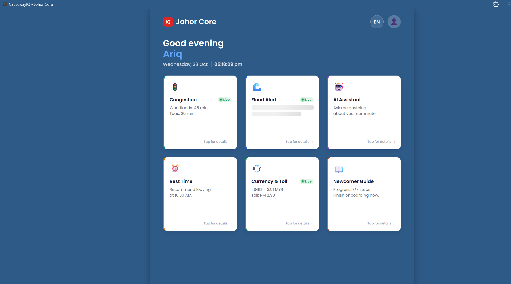
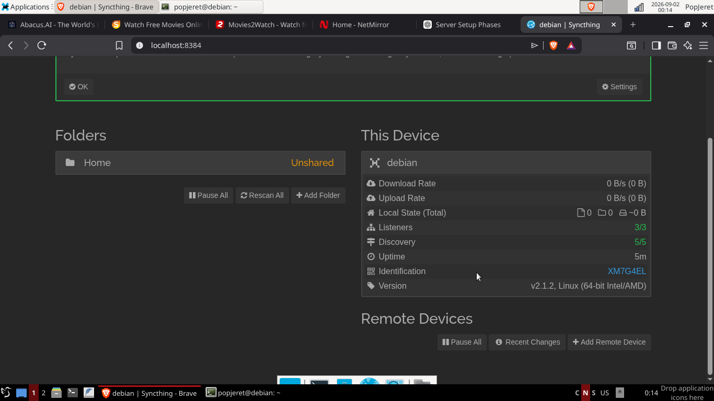
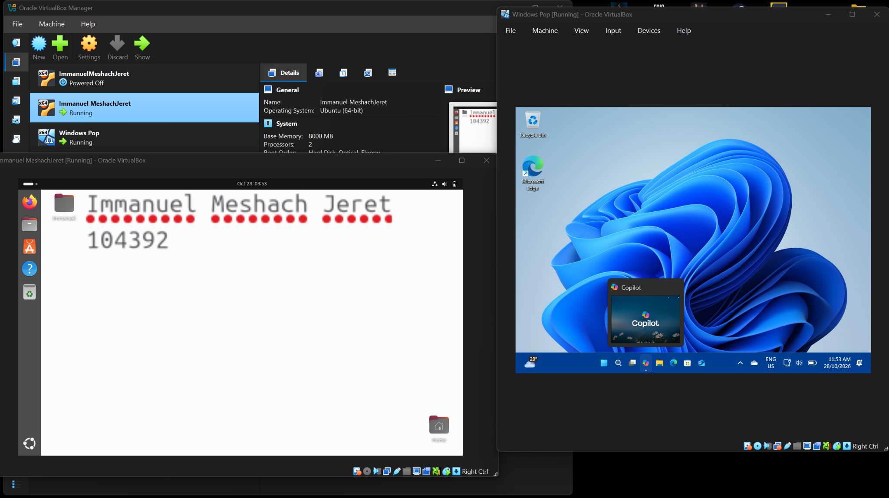
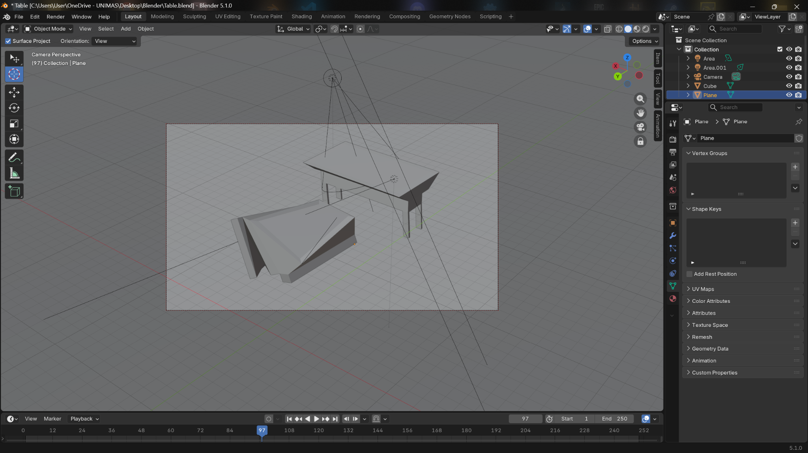
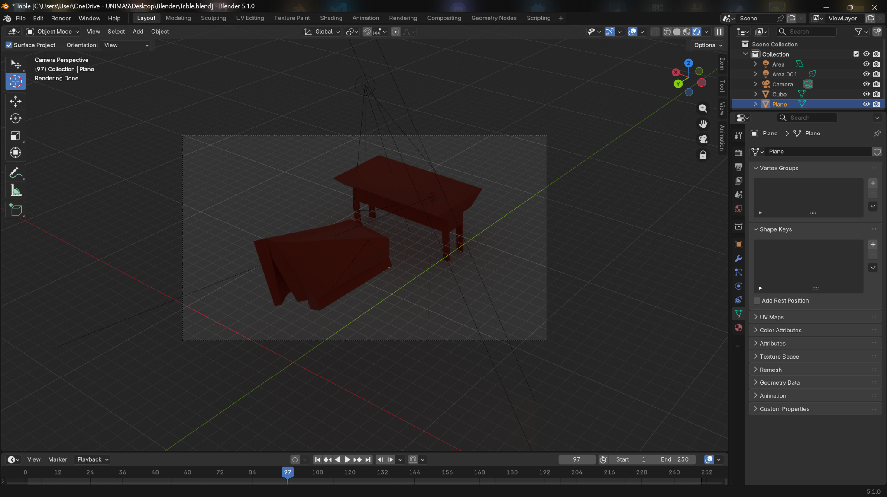

Hackathon
JohorCore
A multilingual platform developed during a UTM hackathon to help commuters travelling between Johor and Singapore.
Exploring Tech & Cosmos
I enjoy exploring Linux, networking, computer hardware, and space technology.
Explore My Projects
I, Immanuel Meshach Jeret, a Network Computing undergraduate at Universiti Malaysia Sarawak (UNIMAS).
I'm curious about how computers and networks work. I enjoy exploring Linux, experimenting with hardware, and learning through hands-on projects.
Apart from computing, I'm interested in astronomy and space exploration. I hope to explore how computer technology can contribute to space-related fields.
I'm currently developing my technical skills and preparing for opportunities to gain industry experience.
These are some technologies and tools I have used or am currently learning.
SKILL EXPLORER
A collection of my personal experiments, university assignments, and collaborative projects. Each project represents something I have explored, developed, or learned along my journey.

A multilingual platform developed during a UTM hackathon to help commuters travelling between Johor and Singapore.
Reviving an older desktop by improving its cooling system and migrating from Windows to Debian 13.

Building a personal home server using Debian, Syncthing, and additional HDD storage. Layer 1 file synchronisation is completed.

Configuring Ubuntu and Windows virtual machines using Oracle VirtualBox for system administration coursework.


Exploring 3D modelling and rendering through tutorials and independent experimentation.
A group assignment exploring CPU scheduling, Process Control Block structures, and simulation timeline logic.
From School to University, here's a little about my education and learning journey.
Present
Bachelor's Degree in Computer Science (Network Computing)
Expected Graduation: 2028
Sijil Tinggi Persekolahan Malaysia (STPM)
Sijil Pelajaran Malaysia (SPM)
Before and during my university journey, I gained experience through part-time jobs. These opportunities helped me develop teamwork, communication, and time management skills.
2025
Part-Time Crew Member
Continued developing adaptability, teamwork, and time management through part-time work.
June - August 2024
Part-Time Crew Member
Gained experience working in a team and communicating with others in a fast-paced environment.
2022
Short-Term Crew Member
My early work experience introduced me to workplace communication, responsibility, and teamwork.
Interested in connecting or discussing technology, projects, or opportunities? Feel free to reach out!
Email: popeyenet26@gmail.com
GitHub: MeshachJeret
LinkedIn: My LinkedIn Profile
Location: Johor, Malaysia